Plot recipes catalog¶
Generated from every recipe installed through the mapi.plots entry point. Name them
in a spec's outputs.plots. See Plots for how to use them.
Each picture is the recipe drawn on synthetic example data, as the app's catalog shows
it.
| Recipe | Version | Title | What it shows | Persona | Needs groups | Needs representation |
|---|---|---|---|---|---|---|
core.calibration |
1.0.0 |
Calibration | Checks if the ranges and probabilities that the model predicts agree with how often things happen in your data. A line inside the band, or dots on the diagonal, show a well-calibrated model. | expert | posterior_predictive, observed_data |
draws |
core.convergence |
1.0.0 |
Sampler convergence | Checks that the fitting method found stable answers for each model parameter. Red points and a 'check' status show the parameters that you must not trust yet. | expert | posterior |
draws |
core.counterfactual |
1.0.0 |
Scenario vs baseline | Compares a 'what if' scenario with the baseline over time. It also shows how sure the model is about the total difference. | both | – | any |
core.data_overview |
1.0.0 |
Data overview | Shows each column of your data over time, where values are missing and how much data each group has. Use it before you fit a model. | both | – | any |
core.decision_distribution |
1.0.0 |
Decision outcome | Shows the range of results for each option of a decision. It also gives the probability that each option is the best. | both | – | draws |
core.decomposition |
1.0.0 |
Decomposition | Splits the outcome into the parts that the model adds together, such as a baseline and each driver. It shows each part over time and its total share. | both | contributions |
any |
core.fit_vs_actual |
1.0.0 |
Predicted vs actual | Puts each prediction of the model next to the actual value in a scatter plot. Dots on the dashed diagonal line are perfect predictions. | both | – | any |
core.model_comparison |
1.0.0 |
Model comparison | Ranks two or more models by how well they are expected to predict new data. It shows how far each model is from the best one and how sure that difference is. | expert | – | any |
core.pair |
1.0.0 |
Pair plot | Shows the draws of each pair of model parameters as a cloud of points, with a histogram of each parameter. Red points mark draws where the fitting method had problems. | expert | posterior |
draws |
core.posterior_forest |
1.0.0 |
Posterior forest | Shows the estimate and the range of each model parameter as a row with a dot and two lines. Rows whose range does not include zero have a clear direction. | expert | posterior |
draws |
core.ppc |
1.0.0 |
Posterior predictive check | Compares data that the fitted model makes with your actual data. It shows if the ranges of the model are too narrow, too wide or shifted. | expert | posterior_predictive, observed_data |
draws |
core.ppc_fan |
1.0.0 |
Fit and forecast | Shows the model's estimate over time as a line with shaded ranges, and the actual values as dots. A dashed line marks where the training data ends and the forecast starts. | both | – | any |
core.prior_predictive |
1.0.0 |
Prior predictive check | Shows data that the model can make before it sees your data, next to your data. Use it to check that your starting assumptions give values of the right size. | expert | prior_predictive |
any |
core.rank_matrix |
1.0.0 |
Rank matrix | Shows how likely each item is to have each place in a ranking, and how likely each item is to be above each other item. Use it when the order of items matters more than their values. | both | – | draws |
core.residuals_over_time |
1.0.0 |
Residuals over time | Shows the error of the model (actual minus predicted) for each point in time. The errors should stay near the zero line with no pattern. | expert | – | any |
core.ridge |
1.0.0 |
Ridgeline | Shows a curve of the possible values for each group, such as each school or each region, one above the other and sorted by the average. Use it to compare many groups at once. | both | – | draws |
core.state_sequence |
1.0.0 |
State sequence | Shows your data over time above the probability of each hidden state, such as a calm or a busy period. Use it to see when the state changes and how sure the model is. | both | – | any |
ml.feature_importance |
1.0.0 |
Feature importance | Ranks the inputs that a tabular model uses most. For a linear model it shows the size and the direction of each input's effect. | expert | – | any |
mmm.budget_plans |
1.0.0 |
Budget plan comparison | Compares budget plans side by side: how each plan splits the spend and what outcome each plan is expected to bring. It also shows the change from a reference plan. | both | plans |
draws |
mmm.decomposition |
1.0.0 |
Contribution by component | Splits sales (or another KPI) into the baseline and the part from each marketing channel. It shows each part over time and its total share. | both | contributions |
any |
mmm.marginal_cost |
1.0.0 |
Marginal cost | Shows what the next unit of outcome costs in each channel at each level of spend. It can also show the return of the next unit of spend. | both | response_curves |
any |
mmm.prior_beliefs |
1.0.0 |
Your beliefs and the priors | Compares the range that you gave for each channel with the values that the model allows before it sees your sales. Use it to check that the model understood your beliefs. | guided | prior_beliefs |
any |
mmm.response_curves |
1.0.0 |
Response curves | Shows how much outcome each channel brings for each level of spend. A curve that becomes flat shows that more spend in that channel adds little. | both | response_curves |
any |
net.graph |
1.0.0 |
Network graph | Shows a network as dots joined by lines, where thick lines are strong links. A second panel shows every pair of nodes as a grid of colours. | both | – | any |
sci.area_map |
1.0.0 |
Area map | Shows a map of areas, such as districts, coloured by the model's estimate for each area. Other panels show the uncertainty and how likely it is that the value is above a limit. | both | – | any |
sci.ensemble |
1.0.0 |
Ensemble of draws | Shows many possible paths from the model as thin lines, with a shaded range and the actual values. Use it to see what single outcomes can look like, not only the average. | both | – | any |
sci.field_map |
1.0.0 |
Field map | Shows a map of a value that the model estimates on a grid, such as a density over an area. One panel shows the average and another panel shows where the model is not sure. | both | – | any |
sci.image_residuals |
1.0.0 |
Image residuals | Shows the observed image, the image that the model expects and the difference between them. A pattern in the difference shows something that the model misses. | both | observed_data |
any |
sci.phylogeny |
1.0.0 |
Phylogeny with tip estimates | Shows a family tree of species next to the model's estimate for each species. Close relatives sit side by side, so you can see if related species have similar values. | both | – | any |
sci.point_pattern |
1.0.0 |
Point pattern | Shows points, such as events or light sources, at their positions on a map or an image. A ring around each point shows where its true position can be. | both | – | any |
sci.power_spectrum |
1.0.0 |
Power spectrum | Shows how much signal there is at each scale or frequency, as the model sees it, with shaded ranges and the measured points. | expert | – | any |
sci.ppc_image_grid |
1.0.0 |
Predictive image grid | Shows the observed image next to a few images that the model makes. If the model fits, it is difficult to tell which image is the real one. | both | observed_data |
any |
sci.profile_bands |
1.0.0 |
Profiles with bands | Shows the model's estimate along one dimension, such as distance, with shaded ranges. It draws one curve for each level of a second dimension, such as time. | both | – | any |
sci.rose |
1.0.0 |
Rose of angles | Shows directions or times of day on a circle. Bars show how often each direction occurs, with the range that the model expects for each sector. | both | – | any |
sci.swatches |
1.0.0 |
Colour swatches | Shows squares in the colours that the model gives to each item, next to the measured colours. Squares that change from draw to draw show where the model is not sure. | both | – | any |
sci.vector_field |
1.0.0 |
Vector field | Shows a field of arrows, such as forces or flows, on a grid. Colours show the length of the arrow in each cell and a second panel shows where the length is not certain. | both | – | any |
Calibration¶
core.calibration@1.0.0
Checks if the ranges and probabilities that the model predicts agree with how often things happen in your data. A line inside the band, or dots on the diagonal, show a well-calibrated model.
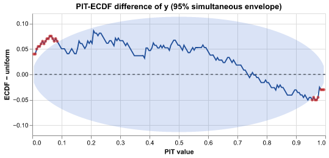
How to read it. The line goes above the band near 0 and below it near 1: too many actual values are in the tails. The predicted ranges of the model are too narrow.
Use it when
- You want a sharper check of the predicted ranges than the PIT histogram
- You predict a yes/no outcome and want to know if a 70% prediction comes true about 70% of the time
Avoid it when
- You have no actual values to compare with
- You have only a few observations (fewer than about 30)
What it needs
- Predictions with draws (posterior_predictive or predictions group)
- The actual values (observed_data group)
What is on the chart
- For numbers: the PIT-ECDF difference with a 95% band that holds at all points together
- For yes/no outcomes: a reliability diagram with a band for each group and a histogram of the predicted probabilities
- Red points where the line or a group is outside its band
- A caption with the verdict, and the Brier score for yes/no outcomes
For experts
Continuous: PIT = P(ŷ < y) + ½ P(ŷ = y); the line is ECDF(z) − z on a grid of min(max(n, 20), 200) points. The simultaneous envelope at prob (0.95) is ±c·sqrt(z(1−z)/n) with c the prob quantile of the largest standardised deviation over the grid in n_sim (1000) simulated uniform samples (cumulative multinomial counts, seed). Binary (auto when y ∈ {0, 1} and the draws are in [0, 1]): bins (10) equal-width bins of the mean prediction; each band is the binomial range p ± z·sqrt(p(1−p)/n_bin); the expected calibration error weights |observed − predicted| by bin size.
Sampler convergence¶
core.convergence@1.0.0
Checks that the fitting method found stable answers for each model parameter. Red points and a 'check' status show the parameters that you must not trust yet.
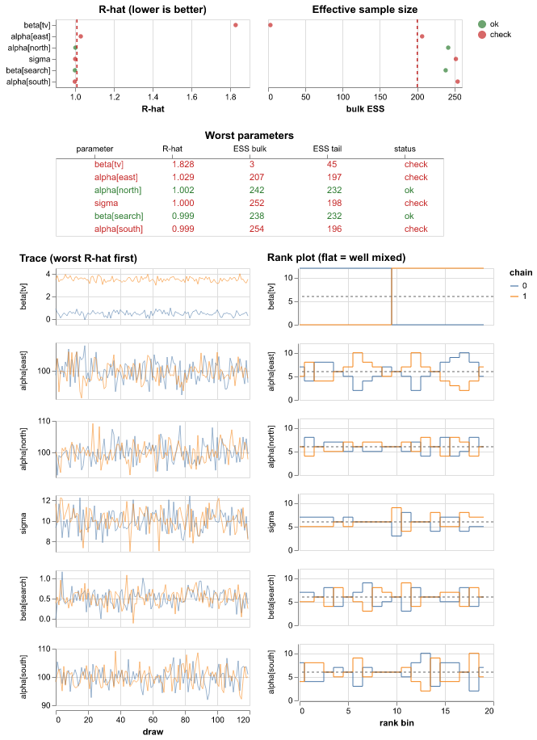
How to read it. beta[tv] has R-hat 1.8 and its two trace lines stay at different levels: the chains disagree. The rank plot is not flat. Run the sampler longer or change the model before you use beta[tv]. The caption also reports 3 divergent transitions.
Use it when
- You fitted a Bayesian model and want to know if you can use it
- Results change from run to run
Avoid it when
- The model is not fitted with draws (such as a least-squares model)
- You want to know if the model is correct (a converged model can still be wrong)
What it needs
- A fitted Bayesian model with draws in chains (the posterior group)
- Optional: sample_stats with the divergence flags
What is on the chart
- A dot for R-hat of each parameter with a red limit line
- A dot for the effective sample size of each parameter with a limit line
- A table of the worst parameters
- Trace lines and rank plots of the worst parameters
- A caption with the number of problems and divergent transitions
For experts
Rank-normalised split R-hat (max of bulk and folded), bulk and tail ESS, per parameter element. A row is 'check' when R-hat > rhat_threshold (default 1.01) or min(bulk, tail ESS) < ess_per_chain × chains (default 100 per chain). Sorted by R-hat; max_parameters (40) dots, table_rows (15) table rows, max_traces (6) traces and rank histograms (bins, default 20; flat = well mixed). max_elements (2000) caps the elements checked. Divergences come from sample_stats.diverging.
Scenario vs baseline¶
core.counterfactual@1.0.0
Compares a 'what if' scenario with the baseline over time. It also shows how sure the model is about the total difference.
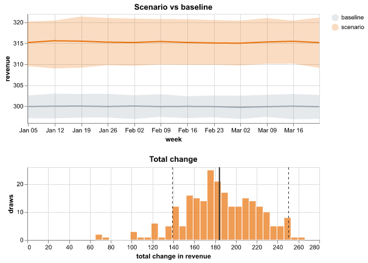
How to read it. The scenario line is above the baseline every week. The histogram of the total change is from 40 to 80, all above zero. The caption says that the probability of an increase is 100%.
Use it when
- You changed an input, such as spend or price, and want to see the effect
- You want the probability that the scenario does better
Avoid it when
- You compare more than one scenario (use Decision outcome)
- The scenario is far outside the data that the model saw
What it needs
- A scenario score: scenario draws (or summary) and baseline draws (or summary)
- Optional: delta draws (scenario minus baseline) for the total difference
What is on the chart
- Two lines with 90% bands: the scenario and the baseline
- A histogram of the total change, with its mean and a 90% range
- A caption with the change and the probability of an increase
For experts
Bands are equal-tailed quantiles of the draws summed over hidden dims; summary inputs use their interval statistics. The total change sums the delta draws over all dims (or scenario − baseline when both have draws); the histogram uses bins (default 30) and the range is an HDI at hdi_prob. When only summaries exist, the chart shows the difference of the means with no uncertainty.
Data overview¶
core.data_overview@1.0.0
Shows each column of your data over time, where values are missing and how much data each group has. Use it before you fit a model.
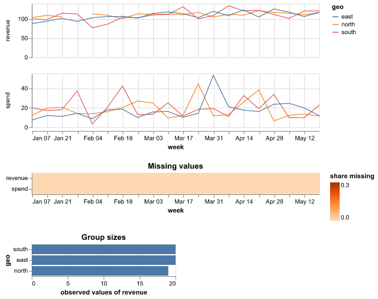
How to read it. The revenue panel has a gap in week 4 for 'north'. The heatmap shows that search spend is missing for the first four weeks in 'east'. Fix or fill these values before you fit the model.
Use it when
- You uploaded a dataset and want a first look
- You want to find gaps, spikes or groups with little data
Avoid it when
- Your data has no numeric columns
- You want a plot of model results
What it needs
- A dataset, or the observed_data, data or constant_data group of a run
What is on the chart
- One panel for each column with a line for each group
- A heatmap of the share of missing values over time
- Bars of the number of values in each group
- A caption with the column that has most missing values
For experts
The time dim is detected (or along); the colour dim is a small categorical dim (facet, at most max_levels levels). Other dims are summed with min_count=1. The heatmap is the mean of isnull() over the other dims. Group sizes count non-null values of the first variable. vars and max_vars pick columns; above max_rows the x values are thinned evenly.
Decision outcome¶
core.decision_distribution@1.0.0
Shows the range of results for each option of a decision. It also gives the probability that each option is the best.
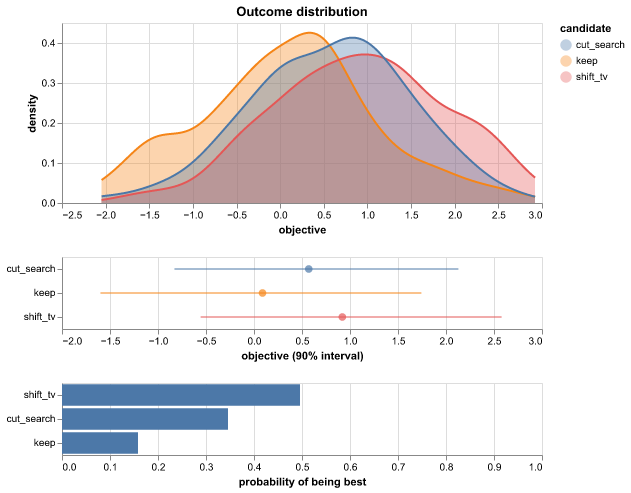
How to read it. 'shift_tv' has the highest curve and a 64% probability to be the best. Its range overlaps with 'cut_search', so the choice is not certain. 'keep' is best in only 8% of the draws.
Use it when
- You choose between a few options, such as budget splits
- You want to see the risk of each option, not only its average
Avoid it when
- The result has more than one value for each option (sum it first)
- You have no draws, only averages
What it needs
- A decision group with draws of one result for each option (an option dimension)
What is on the chart
- Smooth curves of the results of each option
- A dot and a 90% range for each option
- Bars of the probability that each option is the best
- A caption that names the best option
For experts
Needs sample draws (chain/draw or sample). Densities are KDEs on a shared grid from the 0.5th to the 99.5th percentile; ranges are HDIs at hdi_prob. P(best) is the share of draws where the option has the highest (or lowest, with higher_is_better false) value, which needs the options to share draws. candidate names the option dim (default: the only extra dim); max_candidates caps it at 12.
Decomposition¶
core.decomposition@1.0.0
Splits the outcome into the parts that the model adds together, such as a baseline and each driver. It shows each part over time and its total share.
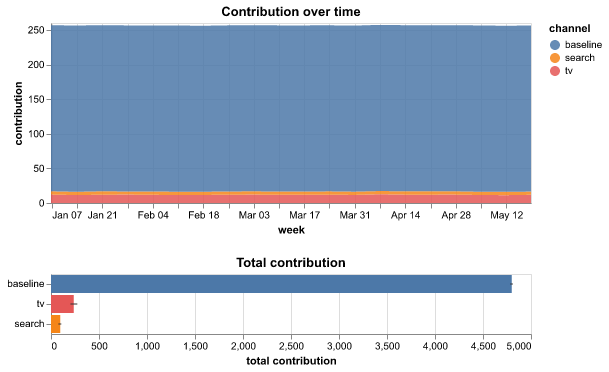
How to read it. The baseline gives 85% of revenue, TV 10% and search 5%. The 90% range of search includes zero, so the model is not sure that search adds anything.
Use it when
- You want to know how much each part of the model explains
- You want to explain the result to people who do not read models
Avoid it when
- Your model does not add its parts together
- Some parts are negative and large (a stacked area is then hard to read)
What it needs
- A contributions group with one variable or label for each part, over time
What is on the chart
- Stacked areas of each part over time
- Bars of the total contribution of each part with a 90% range
- A caption with the share of the top parts, and the parts that can be zero
For experts
Components are the labels of a component dim (component, default the first of component/channel/contribution/term/effect) plus whole variables without it. The area uses the mean over draws per time; the bar uses the mean of each draw's total with an HDI at hdi_prob (default 0.9). Shares are of the summed means. max_components caps the parts (default 20).
Predicted vs actual¶
core.fit_vs_actual@1.0.0
Puts each prediction of the model next to the actual value in a scatter plot. Dots on the dashed diagonal line are perfect predictions.
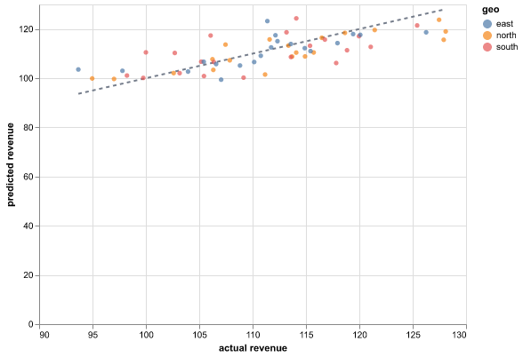
How to read it. Most dots are near the diagonal and the caption says R² = 0.85. The dots for 'south' are all below the line, so the model predicts too low for that market.
Use it when
- You want a quick view of how accurate the model is
- You want to find the cells where the model is far wrong
- Your data has no time dimension
Avoid it when
- You want to see when the errors happen (use Residuals over time)
- You need to see the range of the predictions (this chart shows only the middle value)
What it needs
- Predictions with draws (posterior_predictive, predictions or draws group), or a score summary with interval statistics
- The actual values (observed_data or observed group)
What is on the chart
- A dot for each cell: the actual value across, the prediction up
- A dashed diagonal line for perfect predictions
- Colours for each market or product when there is a group dimension
- A caption with R² and the typical error in percent (MAPE)
For experts
Point = median or mean of the draws (or the summary's point statistic). With draws, hidden dims are summed; with a score summary, the extra dims are kept as cells. R² = 1 − SS_res / SS_tot on the plotted cells (not a held-out score). MAPE skips cells where the actual value is zero. The chart is the same for train and test cells: filter the input to judge the forecast.
Model comparison¶
core.model_comparison@1.0.0
Ranks two or more models by how well they are expected to predict new data. It shows how far each model is from the best one and how sure that difference is.
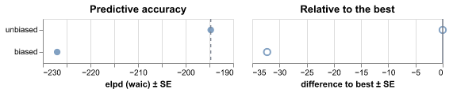
How to read it. 'unbiased' is best. 'biased' is 35 ± 6 elpd worse. That is more than twice the standard error, so the difference is clear. Use 'unbiased'.
Use it when
- You fitted more than one model to the same data and want to pick one
- You want to know if a more complex model is worth it
Avoid it when
- The models use different data or a different outcome
- You have only one model
What it needs
- A comparison group (for example from PSIS-LOO), or the log_likelihood group of each model
What is on the chart
- A dot and a ±1 standard error line for the score (elpd) of each model
- A dot and a ±1 standard error line for the difference to the best model
- A caption that names the best model and judges the gap
For experts
With ic='auto' a precomputed comparison group (elpd/elpd_loo/elpd_waic/elpd_kfold, se, dse, weight on a model_dim) is used as is; otherwise WAIC is computed from each child's log_likelihood (var picks the variable) and dse = sqrt(n · var(pointwise difference)) to the best model. Verdict on the runner-up: |Δelpd| < 4 is very small; > 2 dse is clear; else smaller than its uncertainty. Prefer PSIS-LOO over WAIC when it is available.
Pair plot¶
core.pair@1.0.0
Shows the draws of each pair of model parameters as a cloud of points, with a histogram of each parameter. Red points mark draws where the fitting method had problems.
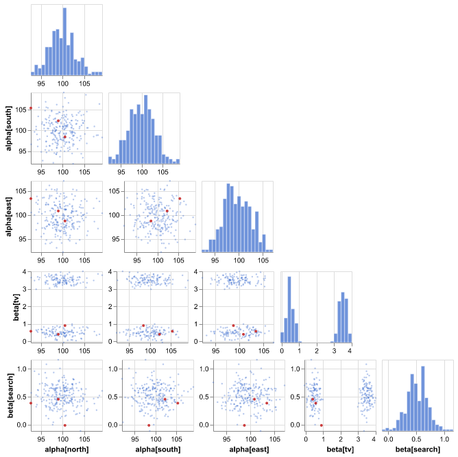
How to read it. The cloud of beta[tv] against alpha[north] has two separate groups of points: the two chains found different values of beta[tv]. The 3 red points are inside the clouds, so they do not point to a funnel.
Use it when
- Sampler convergence reports divergent transitions and you want to see where they are
- You want to see if two parameters trade off against each other
- You want to see the shape of the fitted values, such as two peaks or a funnel
Avoid it when
- The model has many parameters and you do not know which ones to look at
- You want the ranges of many parameters at once (use Posterior forest)
What it needs
- A fitted Bayesian model with draws in chains (the posterior group)
- Optional: sample_stats with the divergence flags
What is on the chart
- A histogram of each parameter on the diagonal
- A cloud of points for each pair of parameters below the diagonal
- Red points for the divergent transitions
- A caption with the strongest correlation and the number of divergences
For experts
Elements of var_names (default: every numeric posterior variable) are taken in model order up to max_params (5; constant elements are skipped). The scatters show up to max_draws (500) evenly thinned draws plus the divergent draws; the histograms (bins, 20) use all draws. Each axis spans the full range of the draws. Divergences come from sample_stats.diverging when its (chain, draw) shape matches. The caption reports the largest |Pearson r| over all draws; above 0.8 it suggests a reparameterisation.
Posterior forest¶
core.posterior_forest@1.0.0
Shows the estimate and the range of each model parameter as a row with a dot and two lines. Rows whose range does not include zero have a clear direction.
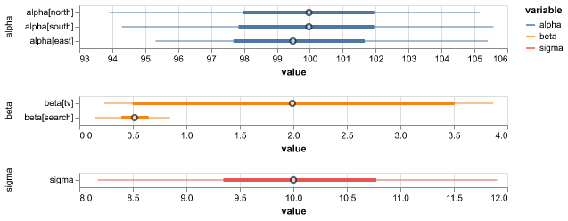
How to read it. beta[tv] is 0.5 with a 94% range from 0.1 to 0.9: the effect is clearly positive. beta[search] goes from −0.2 to 0.6, so its direction is not certain.
Use it when
- You want to read the fitted values of the parameters
- You want to see which effects are clearly positive or negative
Avoid it when
- The parameters have no clear meaning on their own (for example, many latent values)
- The fit has not converged (check Sampler convergence first)
What it needs
- A fitted Bayesian model with draws (the posterior group)
What is on the chart
- A dot for the median (or mean) of each parameter
- A thick bar for the middle 50% range
- A thin line for the 94% range
- A dashed zero line for variables whose ranges cross zero
- One panel with its own scale for each variable
For experts
The thin line is the HDI at hdi_prob (default 0.94, the ArviZ default); the thick bar is the central (equal-tailed) interval at inner_prob (default 0.5). point is median or mean. Elements are listed in model order up to max_rows (60); var_names picks variables. The caption counts intervals that exclude zero, which only matters for parameters where zero means 'no effect'.
Posterior predictive check¶
core.ppc@1.0.0
Compares data that the fitted model makes with your actual data. It shows if the ranges of the model are too narrow, too wide or shifted.
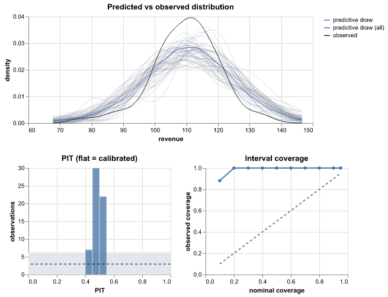
How to read it. The coverage line is below the diagonal and only 70% of the values are in the 90% range. The PIT histogram is high at both ends (a U shape). The ranges of the model are too narrow, so the model is too sure.
Use it when
- You want to check if the model's ranges are honest
- You want to see if the model gets the shape of the data right, such as its tails
Avoid it when
- You want to see the fit over time (use Fit and forecast)
- You have no draws, only averages
What it needs
- Predictions with draws (the posterior_predictive group)
- The actual values (observed_data group)
What is on the chart
- Thin curves for the shape of some predicted datasets and a dark curve for your data
- A PIT histogram with a grey band for the expected count (flat = calibrated)
- A coverage line against the ideal diagonal
- A caption with the coverage of the 90% range and warnings
For experts
PIT = P(ŷ < y) + ½ P(ŷ = y) per observed cell over the matched draws. The PIT histogram uses bins (default 20) and a ±1.96 SD binomial band. Coverage is the share of observations inside central equal-tailed intervals at levels (0.1 to 0.95). Caption rules: mean PIT < 0.4 (over-predicts) or > 0.6 (under-predicts); > 20% of PIT values in the outer 10% (too narrow); < 2% with n ≥ 50 (too wide). PIT values are not independent across time, so treat the band as a guide.
Fit and forecast¶
core.ppc_fan@1.0.0
Shows the model's estimate over time as a line with shaded ranges, and the actual values as dots. A dashed line marks where the training data ends and the forecast starts.
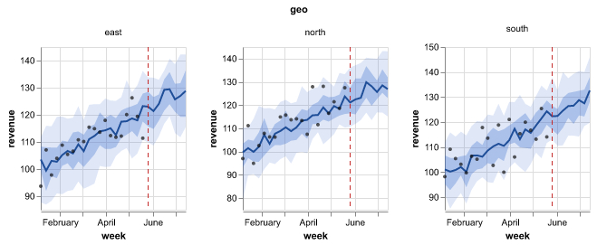
How to read it. The 90% band covers 18 of the 20 actual weeks and the line goes through the dots: the model fits the history well. After the dashed line, three weeks in a row are above the band. The model probably missed a change in level at that time.
Use it when
- You want to see how well the model follows the history
- You want to show a forecast with its range to other people
- You want to check the forecast against values that the model did not see
Avoid it when
- Your data has no time or order dimension
- You want to compare single predictions with actual values cell by cell (use Predicted vs actual)
What it needs
- Predictions with draws (posterior_predictive, predictions or draws group), or a score summary with interval statistics
- Optional: the actual values (observed_data or observed group)
- A time-like dimension, such as week or date
What is on the chart
- A line for the median (or mean) estimate
- Shaded 50% and 90% bands
- Dots for the actual values
- A dashed line where the training data ends
- One panel for each market or product when the data has a small group dimension
- A caption with the share of later actual values inside the 90% band
For experts
Bands are per-time quantiles of the draws (equal-tailed, at levels, default [0.5, 0.9]) after summing the draws over the hidden dims; joint draws make totals valid. A score summary uses its hdi_/eti_/q* statistics and cannot be summed. point picks median or mean. split_at sets the dashed line (default: the tree attr split_at, else the first x after the last observation). facet and max_facets pick the panel dim; the y axes are independent per panel. The caption's coverage counts only observations after the split, in the widest band.
Prior predictive check¶
core.prior_predictive@1.0.0
Shows data that the model can make before it sees your data, next to your data. Use it to check that your starting assumptions give values of the right size.
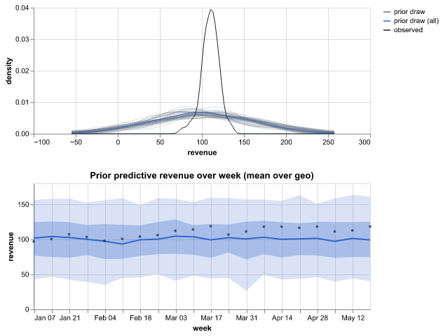
How to read it. The grey curves spread from −100 to 300 and your weekly revenue is between 80 and 130. 100% of your values are inside the 90% range, so the beliefs allow the data. If the curves went to 10 000, the beliefs would be much too wide.
Use it when
- You set the starting beliefs of a Bayesian model and want to check them
- The fit fails or is slow and you suspect the starting beliefs
Avoid it when
- The model is not Bayesian
- You want to judge the fitted model (use Posterior predictive check)
What it needs
- A prior_predictive group (draws of the outcome before fitting)
- Optional: the actual values (observed_data group) with the same variable name
What is on the chart
- Thin grey curves: the shape of the data in some draws
- A thick blue curve for all draws together
- A dark curve for your data
- A band over time when the data has a time dimension
- A caption with the share of your values inside the 90% range
For experts
Densities are KDEs of num_draws (default 50) evenly spaced prior predictive draws plus the pooled draws. Over time: quantile bands at levels of the mean over the other dims. The caption counts observations inside the per-cell 90% equal-tailed interval; under 50% suggests priors too narrow or on the wrong scale, and a median width over 100 × the data range suggests priors too wide. The observed variable must have the same name as the predicted one.
Rank matrix¶
core.rank_matrix@1.0.0
Shows how likely each item is to have each place in a ranking, and how likely each item is to be above each other item. Use it when the order of items matters more than their values.
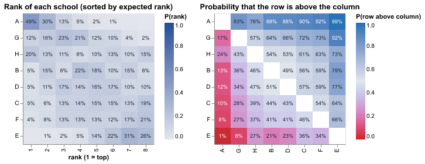
How to read it. School A is first in 49% of the draws and is above school G in 83% of them. The middle schools have spread-out rows: their places are not certain.
Use it when
- You want to rank teams, products, schools or regions and know how sure the ranking is
- You want the chance that one item is better than another
Avoid it when
- There are more than 30 items (raise
max_itemsto 60 at most) - Ties are common and meaningful (the chart breaks ties in a fixed order)
What it needs
- Draws of a variable with one item dimension, in the posterior, predictions or posterior_predictive group
What is on the chart
- A heatmap of the chance of each rank for each item, sorted by the expected rank
- A heatmap of the chance that the row item is above the column item
- Percentages in the cells when there are 12 items or fewer
- A caption with the top item and how sure its place is
For experts
Per draw, items are ranked by value (descending: rank 1 = largest; ties keep item order). P(rank = k) is the share of draws, the expected rank sorts the rows, and P(row above column) = P(x_row > x_col) for descending (else <). Up to max_draws (4000) draws with every item finite; max_items (30) items. labels (auto: at most 12 items) prints the percentages.
Residuals over time¶
core.residuals_over_time@1.0.0
Shows the error of the model (actual minus predicted) for each point in time. The errors should stay near the zero line with no pattern.
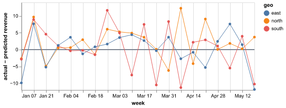
How to read it. The residuals stay between −10 and +10 until June, and then they are all above zero. The model under-predicts from June, so it probably misses a change in the level or a new driver.
Use it when
- You want to find structure that the model does not capture
- You suspect a trend, a season or a one-time event that the model misses
Avoid it when
- You need a first view of the fit (start with Fit and forecast)
- You have very few time points
What it needs
- Predictions with draws (posterior_predictive, predictions or draws group), or a score summary with interval statistics
- The actual values (observed_data or observed group)
What is on the chart
- A line with points for the residual at each time
- A zero line
- One colour for each market or product when there is a group dimension
- A caption that says if the model is too high or too low on average
For experts
Residual = observed − point (median or mean), on the same cells as Predicted vs actual. The caption reports an average bias when |mean residual| > 5% of the mean |observed|. Look for runs on one side of zero (bias over time), waves (a missing season), a funnel (spread that grows with the level) and single spikes (events or data errors).
Ridgeline¶
core.ridge@1.0.0
Shows a curve of the possible values for each group, such as each school or each region, one above the other and sorted by the average. Use it to compare many groups at once.
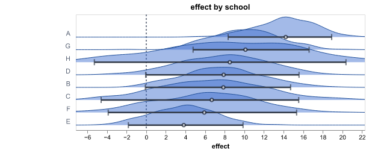
How to read it. School A is at the top with a mean effect of 14 and school E is at the bottom with 4. The bars of most neighbouring schools overlap, so only the difference between the top and the bottom is clear.
Use it when
- Your model has one value for each group and you want to compare the groups
- You want to see the shape of each range, not only its ends
Avoid it when
- There are more than 30 groups. The chart then shows only 30 of them (raise
max_levelsto 100, or use Posterior forest) - The variable has more than one dimension that you cannot fix to one level
What it needs
- Draws of a variable with one group dimension, in the posterior, predictions or posterior_predictive group
What is on the chart
- One smoothed curve for each group, sorted by the mean
- A dot for the mean and a bar for the 94% range of each group
- A dashed zero line when the values cross zero
- A caption with the top and bottom groups and how many neighbours overlap
For experts
Gaussian KDE (Silverman bandwidth) per level on a common grid over the 0.5–99.5 % range of all draws (points, 100), each scaled so its peak is overlap (1.6) row heights. Bars are the HDI at hdi_prob (0.94). Rows are ordered by mean (descending puts the largest on top); above max_levels (30), evenly spaced rows in that order are kept. dim picks the level dim when the variable has more than one; select fixes the others. Up to max_draws (4000) draws.
State sequence¶
core.state_sequence@1.0.0
Shows your data over time above the probability of each hidden state, such as a calm or a busy period. Use it to see when the state changes and how sure the model is.
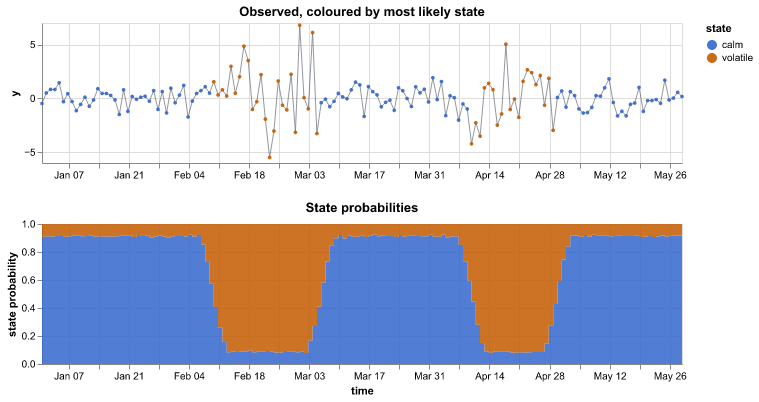
How to read it. The volatile state has a high probability from mid-February to early March and in late April. The large swings in the data are at the same times. At the edges of these periods neither state reaches 80%, so the exact change dates are not certain.
Use it when
- Your model has hidden states or regimes, such as a hidden Markov model
- You want to find change points in a series
Avoid it when
- The states have no fixed labels between draws (label switching). Fix the order in the model first
- There are more than about 10 states
What it needs
- State probabilities with a state and a time dimension, or draws of the state number at each time (posterior, predictions or posterior_predictive group)
- Optional: the observed series (observed_data group)
What is on the chart
- The observed series with each point coloured by its most likely state
- Stacked areas of the probability of each state at each time
- A caption with the number of changes, the share of time in each state and the times with no clear state
For experts
With a state_dim (default 'state') the variable is a probability per state and time: the mean over draws (up to max_draws), clipped at 0 and normalised at each time. Without it, integer state draws are counted per time. along sets the time dim, select fixes other dims, observed_var picks the series (default: the first observed variable with the time dim). The most likely state colours the points; up to max_times (2000) evenly spaced times.
Feature importance¶
ml.feature_importance@1.0.0
Ranks the inputs that a tabular model uses most. For a linear model it shows the size and the direction of each input's effect.
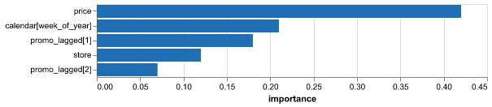
How to read it. price has 42% of the total importance and the week of the year has 21%. promo_lagged[2] has 7%, so the second week after a promotion adds little. For the linear model, the price coefficient is −1.8: a higher price lowers the prediction.
Use it when
- You want to know which inputs drive the predictions
- You want to find inputs that the model ignores
Avoid it when
- You want cause and effect (importance shows use, not cause)
- Inputs are strongly related, so the model can use either one
What it needs
- A feature_importance group from a tree model, or a coefficients group from a linear model
What is on the chart
- Bars for each input, largest first (at most 20)
- Red bars for negative coefficients and blue bars for positive ones
- A range line when there are several models (such as one for each quantile)
- A caption that names the top input and its share
For experts
source='auto' uses the feature_importance group, else coefficients; groups are found at the root, under model/ or anywhere in the tree. Coefficients are ranked by |value|. Extra dims (for example one model per quantile) give the mean as the bar and min to max as the range line. top (default 20) caps the bars; feature_dim names the feature dim. Permutation importance or SHAP is more reliable than impurity importance.
Budget plan comparison¶
mmm.budget_plans@1.0.0
Compares budget plans side by side: how each plan splits the spend and what outcome each plan is expected to bring. It also shows the change from a reference plan.
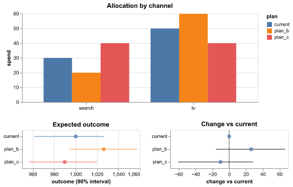
How to read it. plan_b moves 10 from search to TV. It is expected to bring 25 more revenue than 'current' (90% range 5 to 45), with a 99% probability to be better. plan_c is lower than 'current'.
Use it when
- You have a few budget plans and must pick one
- You want the probability that a new plan beats the current plan
Avoid it when
- You have only one plan (use Scenario vs baseline)
- The plans use spend far outside the history
What it needs
- A plans group: spend for each plan and channel, and draws of the outcome for each plan
What is on the chart
- Grouped bars of the spend in each channel for each plan
- A dot and a 90% range of the outcome of each plan
- A dot and a 90% range of the change from the reference plan
- A caption with the best plan and its probability to be better
For experts
Needs outcome draws. Outcome extra dims are summed. Ranges are HDIs at hdi_prob of the outcome and of (plan − reference) per draw; P(better) = share of draws with a positive difference. reference sets the reference plan; spend_var, outcome_var, plan and channel rename the inputs.
Contribution by component¶
mmm.decomposition@1.0.0
Splits sales (or another KPI) into the baseline and the part from each marketing channel. It shows each part over time and its total share.
How to read it. The baseline gives 84% of revenue, TV 11% and search 5%. TV's range is narrow, so its share is clear. The range of search includes zero, so do not report its share as a fact.
Use it when
- You want to know how much each channel added in the period
- You report the effect of marketing to people who do not read models
Avoid it when
- You want the effect of future spend (use Response curves)
- The model has not converged
What it needs
- A contributions group split by channel, with draws, plus baseline variables
What is on the chart
- Stacked areas of the baseline and each channel over time
- Bars of the total contribution of each part with a 90% range
- A caption with the share of the top parts
For experts
Same computation as core.decomposition with component default 'channel'; variables without the channel dim (baseline, controls) become their own parts. Bars use the mean of each draw's total and an HDI at hdi_prob. Shares of a multiplicative (log-scale) model depend on the order of the parts, so read them as a guide.
Marginal cost¶
mmm.marginal_cost@1.0.0
Shows what the next unit of outcome costs in each channel at each level of spend. It can also show the return of the next unit of spend.
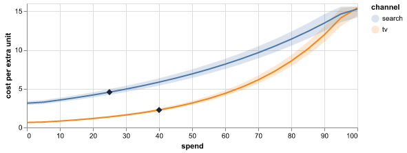
How to read it. At current spend, the next unit of revenue costs 0.8 in search and 2.5 in TV. The TV cost rises fast after 50. Move budget from TV to search until the two costs are close.
Use it when
- You want to move budget to where the next unit of outcome is cheapest
- You want to find the spend level where a channel stops paying back
Avoid it when
- You want total returns, not the return of the next unit (use Response curves)
- The response curves are very flat, so the cost is very large and uncertain
What it needs
- A response_curves group: draws of the response for each channel and spend level
- Optional: the current spend of each channel
What is on the chart
- A line for the median cost (or return) of each channel
- A shaded 90% band for each channel
- A diamond at the current spend of each channel
- A caption that names the cheapest channel at current spend
For experts
Per draw: slope = np.gradient(response, spend). metric='cost' plots 1/slope (NaN where the slope is ≤ 0); metric='roi' plots the slope. Values above the clip_quantile (default 0.98) of all finite values are capped, so the top of a band can be flat because of the cap. Median and HDI at hdi_prob. The value at current spend is interpolated on the median curve, not per draw.
Your beliefs and the priors¶
mmm.prior_beliefs@1.0.0
Compares the range that you gave for each channel with the values that the model allows before it sees your sales. Use it to check that the model understood your beliefs.
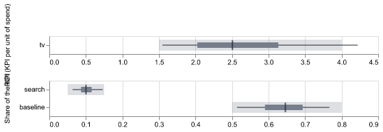
How to read it. You said TV's ROI is between 1.5 and 4.0 with 80% certainty. Only 60% of the model's values are in that range and the median is 2.5. The beliefs were translated too wide. Narrow the range or check the units of spend.
Use it when
- You entered beliefs about ROI or share for each channel
- You want to check the beliefs before you fit the model
Avoid it when
- You did not enter beliefs (the chart then has nothing to compare)
- You want the fitted results (use Contribution by component)
What it needs
- A prior_beliefs group: draws of ROI or share for each channel, and the ranges that you gave
What is on the chart
- A light band for the range that you gave
- A thin line for 90% of the model's starting values
- A dark bar for the middle 50% and a tick at the median
- One panel for each quantity (ROI, share)
- A caption with the share of values inside your range for each channel
For experts
Per channel, the stated quantity (roi or contribution_share, from stated_quantity) gives 5/25/50/75/95% quantiles of the prior draws; baseline_share with range attrs adds a baseline row. Coverage = share of prior draws inside [stated_low, stated_high], compared with stated_credibility. The height setting here is the height of one channel row (default 26).
Response curves¶
mmm.response_curves@1.0.0
Shows how much outcome each channel brings for each level of spend. A curve that becomes flat shows that more spend in that channel adds little.
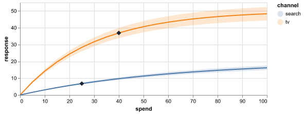
How to read it. The TV curve rises fast and becomes flat after 60. TV's diamond is at 40, on the flatter part. Search is still steep at 25. More money in search probably returns more than the same money in TV.
Use it when
- You want to know which channels are near saturation
- You plan the next budget and want to see the effect of more or less spend
Avoid it when
- You need the cost of the next unit of outcome (use Marginal cost)
- You want to read spend far above anything in the history
What it needs
- A response_curves group: draws of the response for each channel and spend level
- Optional: the current spend of each channel
What is on the chart
- A line for the median response of each channel
- A shaded 90% band for each channel
- A diamond at the current spend of each channel
- A caption that names the channel nearest to saturation
For experts
Median and HDI (hdi_prob, default 0.9) per channel and spend level; extra dims (such as geo) are summed. The spend axis is the grid coordinate or a spend_var over (channel, grid). The caption compares the slope of the median curve at current spend with its steepest slope (np.gradient). facet gives one panel per channel.
Network graph¶
net.graph@1.0.0
Shows a network as dots joined by lines, where thick lines are strong links. A second panel shows every pair of nodes as a grid of colours.
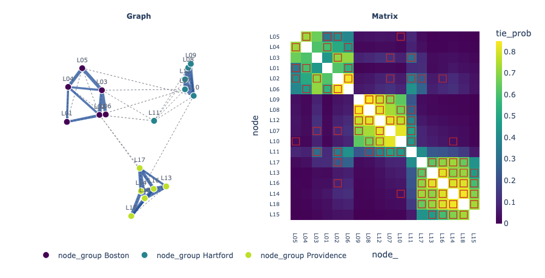
How to read it. The lawyers form three clusters that match their offices. Most known links are inside an office. Lawyer L11 links to all three clusters, so it is a bridge between the offices.
Use it when
- The model estimates links between pairs of things, such as people or genes
- You want to see groups of nodes that link to each other
- You want to compare the estimated links with the known links
Avoid it when
- There are more than 300 nodes (the drawing becomes too dense)
- The links change over time (pick one time with select)
What it needs
- A variable with two node dimensions, such as (node, node_): a probability, a weight or a partial correlation, as draws, a score summary or plain values
- Optional: node positions (node, latent_dim), a group for each node, and the known or observed links
What is on the chart
- A drawing of the nodes and the links above the threshold, with blue for positive and red for negative links
- Arrows when the links have a direction
- A grid of the link values for every pair, ordered so that groups are together
- Dotted lines and open squares for the known links
For experts
The edge value is the posterior mean (or the summary point). Undirected graphs use the mean of both directions; directed defaults to an asymmetric matrix and signed to any negative value. threshold defaults to 0.5 for values in [0, 1], else 10% of the largest |value|; hover shows P(|value| > threshold) over the draws. Positions are the posterior mean of positions (first two coordinates); else a spectral layout of the normalised Laplacian refined with seeded Fruchterman-Reingold steps. The matrix order is the Fiedler vector, within group levels.
Area map¶
sci.area_map@1.0.0
Shows a map of areas, such as districts, coloured by the model's estimate for each area. Other panels show the uncertainty and how likely it is that the value is above a limit.
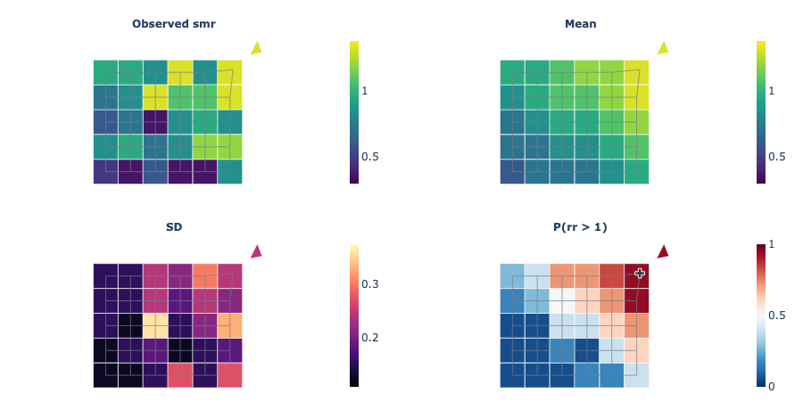
How to read it. The observed panel of lip cancer in Scotland shows extreme values in small districts. The mean panel is smoother. The probability panel is dark red in the north, and crosses mark the districts where the risk is above 1 with 95% probability.
Use it when
- The model gives one value for each area of a map, such as a disease risk
- You want to find the areas where the risk is clearly high
- You want to compare the smoothed estimate with the raw observed values
Avoid it when
- The output is a value on a regular grid (use Field map)
- You need a base map with roads and place names (the chart draws only the outlines)
What it needs
- Draws of a per-area output in the posterior, predictions or posterior_predictive group (a summary with mean and sd also works)
- The outlines of the areas as ring_x(area, vertex) and ring_y(area, vertex)
- Optional: observed values for each area and a neighbour matrix adjacency(area, area_)
What is on the chart
- One map panel each for the observed values, the mean and the SD
- A panel with the probability that the value is above the threshold
- Crosses on the areas where that probability is above 95%
- Optional grey lines between neighbouring areas
For experts
Statistics per area over up to max_draws (2000) draws: mean, median, sd (ddof 1) and P(value > threshold) (stats; default observed, mean, sd and exceedance). threshold defaults to 1 for a non-negative output (a relative risk) and to 0 otherwise. Fills use classes (9) equal steps of the colour scale over the 0.5 to 99.5% range; the colour bar and the hover show the exact value. log_scale colours log10 of the value panels. Areas match the outlines by label when both have labels, else by position. Polygons are drawn as filled scatter shapes on equal-aspect axes, not a geographic projection.
Ensemble of draws¶
sci.ensemble@1.0.0
Shows many possible paths from the model as thin lines, with a shaded range and the actual values. Use it to see what single outcomes can look like, not only the average.
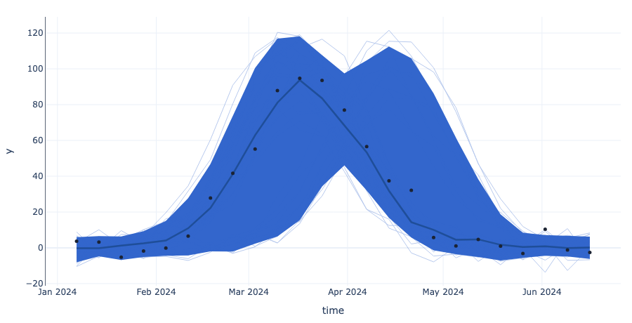
How to read it. Most thin lines rise to a peak in week 10, but some peak in week 14. The band is wide around the peak. The dots are inside the band, so the model allows the actual peak, but it is not sure of the timing.
Use it when
- You want to see the shapes that the model allows, such as peaks and dips
- You want to explain uncertainty to people with single example paths
Avoid it when
- You want a clean summary for a report (use Fit and forecast)
- The output has more than one dimension that you cannot fix to one level
What it needs
- Draws of an output in the predictions, posterior_predictive or posterior group
- Optional: the actual values (observed_data group)
What is on the chart
- Thin lines for 40 single draws
- A shaded 90% band
- A thick line for the median
- Dots for the actual values
- A caption with the share of actual values inside the band
For experts
n_draws (40) lines chosen without replacement with seed; bands are equal-tailed quantiles at levels (default [0.9]) over up to max_draws (2000) draws. point is median, mean or none. along defaults to the time-like dim, else the grid's x. Other dims must have one level or be fixed with select. The median line is not itself a possible path.
Field map¶
sci.field_map@1.0.0
Shows a map of a value that the model estimates on a grid, such as a density over an area. One panel shows the average and another panel shows where the model is not sure.
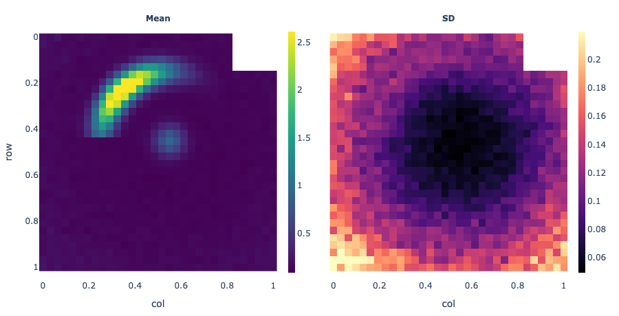
How to read it. The mean panel of a lensed galaxy shows a bright arc at the top left. The SD panel is dark there and bright at the edges of the image. The arc is clear, and the edges are not fixed by the data.
Use it when
- The model gives a value for each cell of a 2D grid (an image or a map)
- You want to see where the data fixes the value and where it does not
Avoid it when
- The output has no grid (use Profiles with bands or Ensemble of draws)
- The output is a direction and a length (use Vector field)
What it needs
- Draws of a gridded output in the posterior, predictions or posterior_predictive group
- Two grid dimensions, from the output's grid declaration or the settings
What is on the chart
- A heatmap of the mean in each cell
- A heatmap of the SD (the uncertainty) in each cell
- Optional panels: median, mean ÷ SD, 5% and 95% values, and a few single draws
- A slider when the output has a frame dimension, such as time
For experts
Statistics per cell over up to max_draws (400) evenly thinned draws: mean, median, sd (ddof 1), z = mean/sd, q05, q95 and n_draws single draws (stats, default mean and sd). log draws log10 first. Rasters are block-averaged to stay under max_cells per panel. colormap, origin and log default to the grid declaration. frame adds a slider (up to max_frames); select fixes other dims.
Image residuals¶
sci.image_residuals@1.0.0
Shows the observed image, the image that the model expects and the difference between them. A pattern in the difference shows something that the model misses.
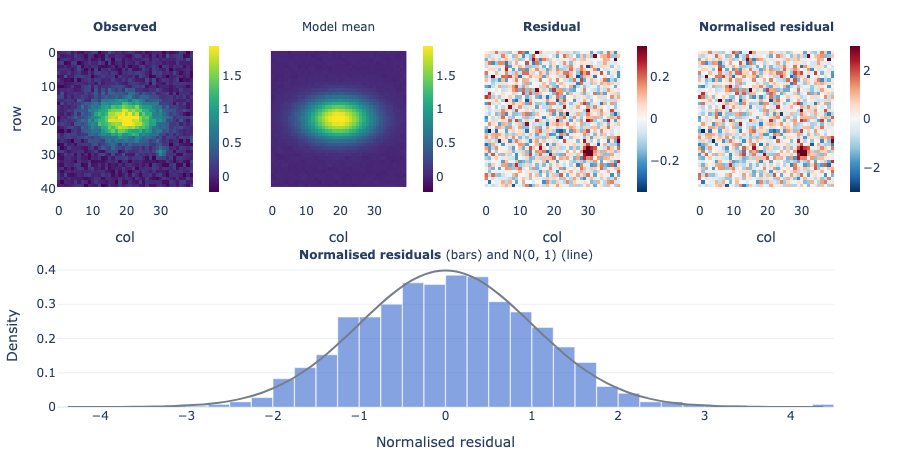
How to read it. The residual of a galaxy image is grey noise except for a red spot at the bottom right. The model has the main galaxy but not a small companion next to it. The normalised residuals have an sd of 1.04, so the noise level is right.
Use it when
- The model makes an image or a map that you can compare with a measured one
- You want to find the parts of the image that the model does not explain
- You want to check that the noise in the model has the right size
Avoid it when
- There is no observed image (use Field map)
- You want to see single images from the model (use Predictive image grid)
What it needs
- Draws of a gridded output in the posterior_predictive, predictions or posterior group
- The observed image with the same grid (observed_data group)
- Optional: the noise of the data (a sigma variable or a number)
What is on the chart
- Heatmaps of the observed image and the model mean on one colour scale
- A heatmap of the residual (observed minus mean) on a red-blue scale
- A heatmap of the residual divided by the uncertainty and the noise
- A histogram of these normalised residuals with the standard normal curve
- A slider when the output has a frame dimension
For experts
Mean and sd (ddof 1) per cell over up to max_draws draws; residual = obs - mean; normalised = residual / sqrt(sd² + σ²). σ² comes from sigma (a variable: posterior draws are averaged as E[σ²]; or a number), read as sigma_kind sd, variance or inverse_variance. Without sigma, a variable named sigma is used, but only for noise-free images: draws from posterior_predictive already hold the noise. The histogram uses all cells at full resolution, bins of 0.25 on [-4.5, 4.5] (the tails go to the end bins). log colours the observed, mean and residual panels as log10 (the residual is a log10 ratio); the normalised residual stays in data units, as σ is.
Phylogeny with tip estimates¶
sci.phylogeny@1.0.0
Shows a family tree of species next to the model's estimate for each species. Close relatives sit side by side, so you can see if related species have similar values.
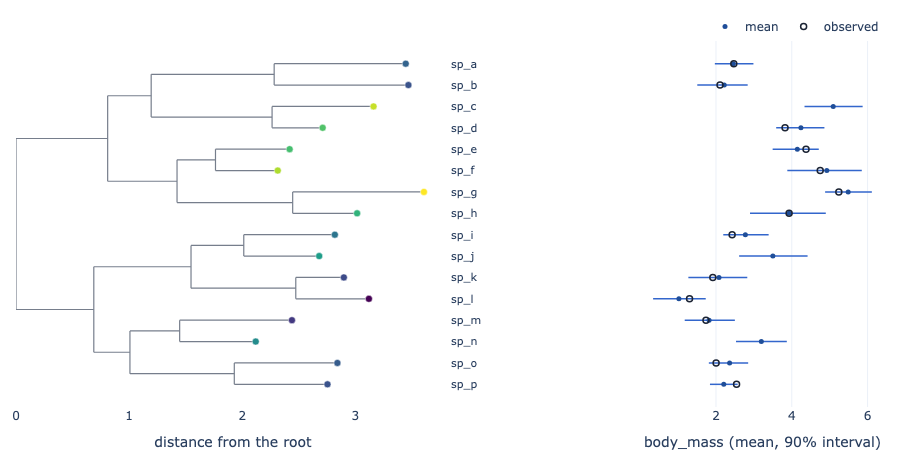
How to read it. The tree of 16 primates puts the large apes together at the top. Their dots in the strip are all on the right. Three species have no observed body mass, and their intervals are a little wider than those of their relatives.
Use it when
- The model gives one value for each species (or other tip) of a tree
- You want to see how the estimate follows the tree
- Some species have no observed value and you want to see their estimate
Avoid it when
- The groups are not related by a tree (use Posterior forest)
- The tree has thousands of tips and you need to see every one of them
What it needs
- Draws of a per-tip output in the predictions, posterior_predictive or posterior group
- The tree as parent(node) and branch_length(node), with optional is_tip(node) and tip_label(node)
- Optional: the observed trait for each tip (observed_data)
What is on the chart
- The tree with the branch lengths along the x axis
- A dot at each tip coloured by the estimate
- A strip with the estimate and its 90% interval for each tip
- Open circles for the observed values
For experts
The layout is rectangular: x is the sum of branch lengths from the root, y the order of the tips in a depth-first walk; a parent sits midway between its outer children. parent holds integer positions (or node labels); -1, NaN or the node itself marks a root, and several roots join at a common origin. The strip shows the mean or median (point) and the equal-tailed interval (0.9). max_tips (400) keeps evenly spaced tips and their ancestors.
Point pattern¶
sci.point_pattern@1.0.0
Shows points, such as events or light sources, at their positions on a map or an image. A ring around each point shows where its true position can be.
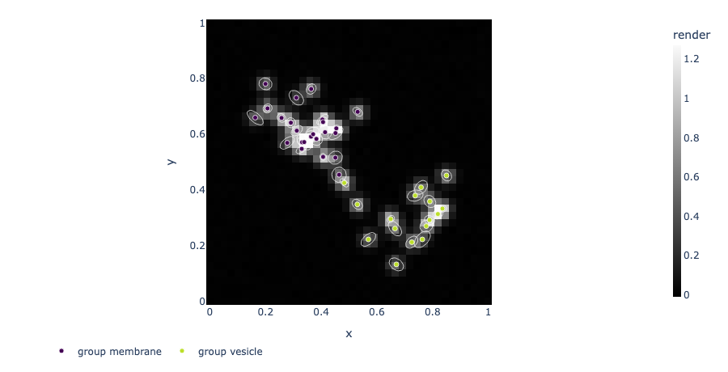
How to read it. Spots in the membrane have small rings, so their positions are clear. Two dim spots have large, tilted rings: they could be one spot or two near spots.
Use it when
- The model finds the positions of points, such as molecules in a microscope image
- You want to see which positions are certain and which are not
- You want to compare the points with an image or a map of the intensity
Avoid it when
- The output is a value on a grid without points (use Field map)
- There are more than 20 000 points (the plot shows a thinned set)
What it needs
- Variables x and y with one value for each point, as draws, a score summary or plain values
- Optional: sd_x and sd_y (or radius) for each point, a group for each point, and a gridded output for the background
What is on the chart
- A dot for each point at its mean position, coloured by group
- A ring (an error ellipse) for each point that holds its true position with 90% probability
- A background image or intensity map
- Open circles for the actual points, when the data has them
For experts
Positions are the posterior mean of x and y (or the summary's point statistic). Ellipses use the 2 x 2 sample covariance of the draws (else sd_x, sd_y or the summary sd, uncorrelated) scaled by sqrt(-2 ln(1 - level)), the chi-square radius for 2 dims; a radius variable is drawn as a circle as given. field (auto: a grid output) is drawn as the field_stat per cell, block-averaged to max_cells. group draws with more than 12 levels use a colour scale.
Power spectrum¶
sci.power_spectrum@1.0.0
Shows how much signal there is at each scale or frequency, as the model sees it, with shaded ranges and the measured points.
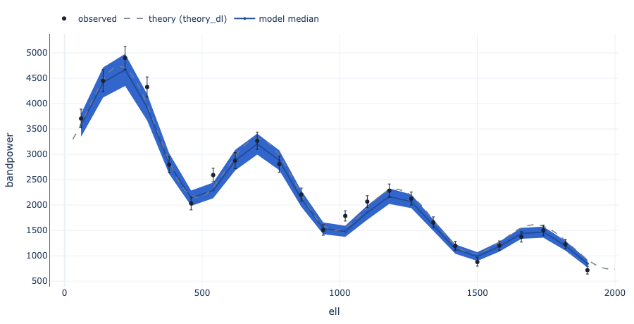
How to read it. The model's spectrum of a sky patch follows the dashed theory curve at large scales, but it is lower than the curve above multipole 1500. 75% of the observed points are in the 90% band, so the patch has a little less power at small scales.
Use it when
- The model gives a spectrum in bins, such as the power of a sky map or a signal
- You want to compare the spectrum with a theory curve and with the data
Avoid it when
- The output is not binned along one dimension (use Profiles with bands)
- You want single possible spectra (use Ensemble of draws)
What it needs
- Draws of a binned output, with a coordinate such as multipole or frequency
- Optional: observed values and their sd (observed_data group)
- Optional: a theory curve in any group
What is on the chart
- A line for the median in each bin
- Shaded 50% and 90% bands
- A dashed theory curve
- Dots for the observed values with error bars
- A caption with the share of observed values inside the 90% band
For experts
Equal-tailed bands at levels (default 0.5, 0.9) and the median or mean over up to max_draws draws. x is x_coord (default: the first numeric coord on the bin dim, such as ell; else the bin index). theory is any variable along one dim (draws give the median). Error bars are error_var, default <observed>_sd. log_x and log_y set log axes. The recipe draws the spectrum as given; scale it (for example to D_ell = ell(ell+1)C_ell/2π) in the model.
Predictive image grid¶
sci.ppc_image_grid@1.0.0
Shows the observed image next to a few images that the model makes. If the model fits, it is difficult to tell which image is the real one.
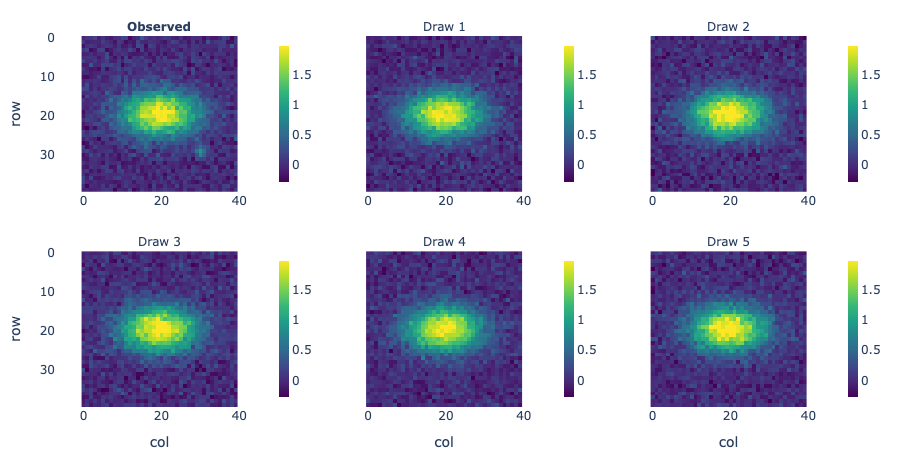
How to read it. In a shuffled grid of six patterns, five look the same and panel D has thinner stripes. The caption says that panel D is the real image, so the model makes stripes that are too wide.
Use it when
- You want a quick visual check that the model can make images like the data
- You want to test yourself or others with a shuffled grid
Avoid it when
- You want to locate the errors cell by cell (use Image residuals)
- There is no observed image (use Field map with draws)
What it needs
- Draws of a gridded output, best from the posterior_predictive group
- The observed image with the same grid (observed_data group)
What is on the chart
- One heatmap of the observed image and one for each draw, on one colour scale
- With shuffle, the panels are in a random order and the caption names the real one
- A slider when the output has a frame dimension
For experts
n_draws (5) draws chosen without replacement with seed; shuffle permutes the observed panel among them with the same seed. All panels share one value range (0.5 to 99.5 percentile). This is the visual 'line-up' test of Buja et al. (2009) and Gelman's graphical posterior predictive checks.
Profiles with bands¶
sci.profile_bands@1.0.0
Shows the model's estimate along one dimension, such as distance, with shaded ranges. It draws one curve for each level of a second dimension, such as time.
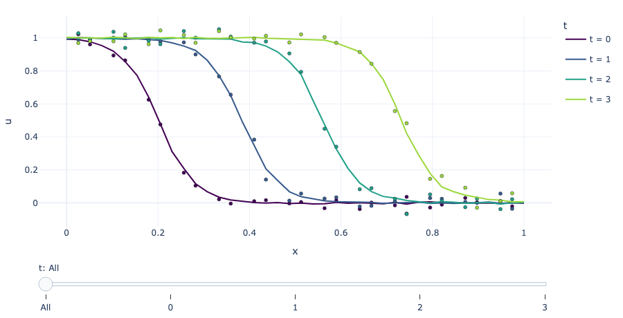
How to read it. Each line is the population along the river on one day. The front moves right and the bands become wider on later days. 88% of the dots are in the 90% band, so the model follows the spread of the population.
Use it when
- The model gives a curve, such as a profile over space at several times
- You want to compare the curves with the actual values
Avoid it when
- The output is a 2D map that you want to see as a picture (use Field map)
- You want to see single possible paths (use Ensemble of draws)
What it needs
- Draws of an output in the predictions, posterior_predictive or posterior group
- Optional: the actual values (observed_data group)
What is on the chart
- A line for the median of each curve
- Shaded 50% and 90% bands for each curve
- Dots for the actual values
- A slider that shows one curve with its bands at a time
- A caption with the share of actual values inside the 90% band
For experts
Median or mean and equal-tailed quantile bands at levels (default 0.5, 0.9; at most 3) over up to max_draws draws. along defaults to the grid's x; by to the grid's frame or y. max_curves (12) picks evenly spaced levels of by. The slider's 'All' step shows the lines without bands. Coverage uses the widest band. log sets a log y axis.
Rose of angles¶
sci.rose@1.0.0
Shows directions or times of day on a circle. Bars show how often each direction occurs, with the range that the model expects for each sector.
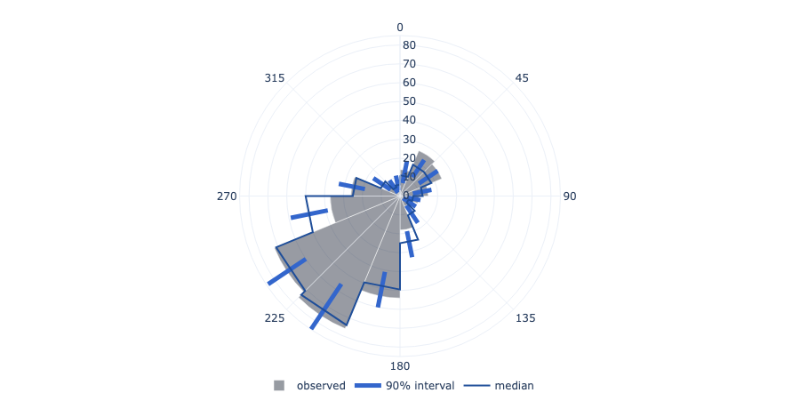
How to read it. The rose of wind directions has a long bar to the south-west. The model's range covers it, but the bars to the north-east end above the range: the model gives too few winds from the north-east.
Use it when
- The data are angles, such as wind directions, hours of the day or days of the year
- You want to check that the model gets the main directions right
- The model gives a density around the circle and you want to see its shape
Avoid it when
- The values are not on a circle (use Posterior predictive check)
- You need the exact numbers for each direction (use a table)
What it needs
- Observed angles (observed_data) and draws of simulated angles (posterior_predictive), or a density over an angle dimension with draws
- The units of the angles: radians, degrees, hours or days
What is on the chart
- Bars for the observed count (or share) in each sector
- A thick line in each sector for the 90% range of simulated data, and the median
- Or a median curve with dotted 90% limits
- A slider when the data have a frame dimension, such as season
For experts
Histogram mode: the observed angles and each of up to max_draws (1000) predictive draws are counted in bins (24) equal sectors; the lines are equal-tailed interval (0.9) quantiles of the counts per sector. scale share divides by the number of angles (the default with a frame). Density mode (an angle_dim such as angle, hour or direction): quantiles per angle; observed angles are scaled to a density per unit. clockwise defaults to true (zero at the top) except for radians.
Colour swatches¶
sci.swatches@1.0.0
Shows squares in the colours that the model gives to each item, next to the measured colours. Squares that change from draw to draw show where the model is not sure.
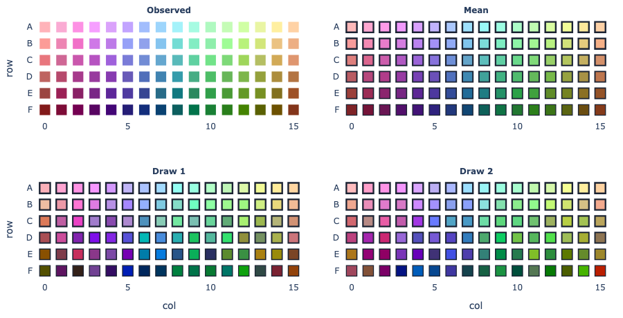
How to read it. On the chip map, the mean squares match the measured squares in the light rows. In the dark rows the draws change from green to brown, so the model is not sure of the dark colours.
Use it when
- The model gives a colour for each item, such as a paint, a chip or a pixel
- You want to compare model colours with measured colours by eye
- The items have places on a chart, such as the colour-naming chip chart
Avoid it when
- The output is not a colour in sRGB from 0 to 1 (convert it first)
- You need exact colour differences (read the numbers instead)
What it needs
- Draws of an output with an item dimension and an rgb dimension of length 3
- Optional: measured colours with the same dimensions (observed_data group)
- Optional: row and col coordinates on the item dimension to draw a map
- Optional: a probability for each item, shown as border width or opacity
What is on the chart
- Squares of the measured colours
- Squares of the mean colour and of a few single draws
- A list of items, or a map when the items have row and col coordinates
- A caption with the mean distance between model and measured colours
For experts
channel (rgb) is the length-3 dim, reordered to r, g, b by its labels. Colours are written as hex strings in the dataset. arrange auto draws a map when row and col coords exist on the item dim (text coords become ordered ticks). prob (draws are averaged) sets border width (0 to 2.5 px) or opacity (prob_as) on the model panels. A list shows at most max_items evenly spaced items. The distance in the caption is the Euclidean sRGB distance on a 0 to 255 scale, not CIEDE2000.
Vector field¶
sci.vector_field@1.0.0
Shows a field of arrows, such as forces or flows, on a grid. Colours show the length of the arrow in each cell and a second panel shows where the length is not certain.
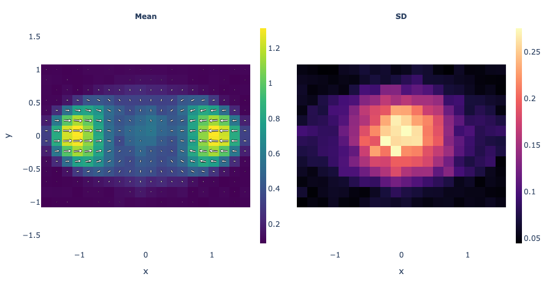
How to read it. The arrows of a cell's traction force point inwards at the edges of the cell. The colours are bright at the two ends, where the forces are largest. The SD panel is high in the centre, so the forces there are not certain.
Use it when
- The model gives a direction and a length for each cell of a 2D grid
- You want to see the pattern of a flow or a force
Avoid it when
- The output has one value for each cell (use Field map)
- The directions change a lot between draws (the mean arrows then look too short)
What it needs
- Draws of a gridded output with a component dimension of length 2 (the x and y parts)
What is on the chart
- A heatmap of the mean length with arrows of the mean direction
- A heatmap of the SD of the length
- Optional panels: the 5% and 95% values of the length
- A slider when the output has a frame dimension
For experts
Length = hypot(u, v) per draw; panels are its mean, sd, q05 or q95 (stats). Arrows are the mean (u, v), block-averaged to about arrows (20) along the longer side and scaled so the longest is 0.9 of the arrow spacing. The mean length is at least the length of the mean vector; they differ when directions vary. component names the length-2 dim (default: the grid's, else the only one).